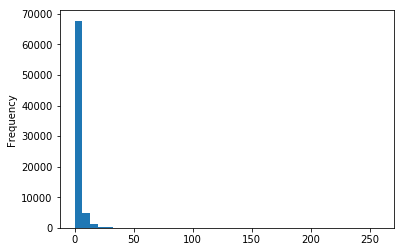
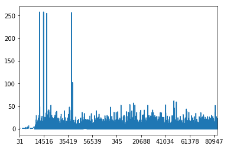

A set of Python tools to make it easier to extract weather station data (e.g., temperature, precipitation) from the Global Historical Climatology Network - Daily (GHCND)
More information on the data can be found here
The code can be downloaded from the get_station_data github repository
from get_station_data import ghcnd
from get_station_data.util import nearest_stn
%matplotlib inline Read station metadata
stn_md = ghcnd.get_stn_metadata()Choose a location (lon/lat) and number of nearest neighbours
london_lon_lat = -0.1278, 51.5074
my_stns = nearest_stn(stn_md,
london_lon_lat[0], london_lon_lat[1],
n_neighbours=5 )
my_stns| station | lat | lon | elev | name | |
|---|---|---|---|---|---|
| 52113 | UKE00105915 | 51.5608 | 0.1789 | 137.0 | HAMPSTEAD |
| 52165 | UKM00003772 | 51.4780 | -0.4610 | 25.3 | HEATHROW |
| 52098 | UKE00105900 | 51.8067 | 0.3581 | 128.0 | ROTHAMSTED |
| 52191 | UKW00035054 | 51.2833 | 0.4000 | 91.1 | WEST MALLING |
| 52131 | UKE00107650 | 51.4789 | 0.4489 | 25.0 | HEATHROW |
Download and extract data into a pandas DataFrame
df = ghcnd.get_data(my_stns)
df.head()| station | year | month | day | element | value | mflag | qflag | sflag | date | lon | lat | elev | name | |
|---|---|---|---|---|---|---|---|---|---|---|---|---|---|---|
| 0 | UKE00105915 | 1959 | 12 | 1 | TMAX | NaN | 1959-12-01 | 0.1789 | 51.5608 | 137.0 | HAMPSTEAD | |||
| 1 | UKE00105915 | 1959 | 12 | 2 | TMAX | NaN | 1959-12-02 | 0.1789 | 51.5608 | 137.0 | HAMPSTEAD | |||
| 2 | UKE00105915 | 1959 | 12 | 3 | TMAX | NaN | 1959-12-03 | 0.1789 | 51.5608 | 137.0 | HAMPSTEAD | |||
| 3 | UKE00105915 | 1959 | 12 | 4 | TMAX | NaN | 1959-12-04 | 0.1789 | 51.5608 | 137.0 | HAMPSTEAD | |||
| 4 | UKE00105915 | 1959 | 12 | 5 | TMAX | NaN | 1959-12-05 | 0.1789 | 51.5608 | 137.0 | HAMPSTEAD |
Filter data for, e.g., a single variable
var = 'PRCP' # precipitation
df = df[ df['element'] == var ]
### Tidy up columns
df = df.rename(index=str, columns={"value": var})
df = df.drop(['element'], axis=1)
df.head()| station | year | month | day | PRCP | mflag | qflag | sflag | date | lon | lat | elev | name | |
|---|---|---|---|---|---|---|---|---|---|---|---|---|---|
| 93 | UKE00105915 | 1960 | 1 | 1 | 2.5 | E | 1960-01-01 | 0.1789 | 51.5608 | 137.0 | HAMPSTEAD | ||
| 94 | UKE00105915 | 1960 | 1 | 2 | 1.5 | E | 1960-01-02 | 0.1789 | 51.5608 | 137.0 | HAMPSTEAD | ||
| 95 | UKE00105915 | 1960 | 1 | 3 | 1.0 | E | 1960-01-03 | 0.1789 | 51.5608 | 137.0 | HAMPSTEAD | ||
| 96 | UKE00105915 | 1960 | 1 | 4 | 0.8 | E | 1960-01-04 | 0.1789 | 51.5608 | 137.0 | HAMPSTEAD | ||
| 97 | UKE00105915 | 1960 | 1 | 5 | 0.0 | E | 1960-01-05 | 0.1789 | 51.5608 | 137.0 | HAMPSTEAD |
df.drop(columns=['mflag','qflag','sflag']).tail(n=10)| station | year | month | day | PRCP | date | lon | lat | elev | name | |
|---|---|---|---|---|---|---|---|---|---|---|
| 83938 | UKE00107650 | 2016 | 12 | 22 | 0.0 | 2016-12-22 | 0.4489 | 51.4789 | 25.0 | HEATHROW |
| 83939 | UKE00107650 | 2016 | 12 | 23 | 1.4 | 2016-12-23 | 0.4489 | 51.4789 | 25.0 | HEATHROW |
| 83940 | UKE00107650 | 2016 | 12 | 24 | 0.0 | 2016-12-24 | 0.4489 | 51.4789 | 25.0 | HEATHROW |
| 83941 | UKE00107650 | 2016 | 12 | 25 | 1.0 | 2016-12-25 | 0.4489 | 51.4789 | 25.0 | HEATHROW |
| 83942 | UKE00107650 | 2016 | 12 | 26 | 0.0 | 2016-12-26 | 0.4489 | 51.4789 | 25.0 | HEATHROW |
| 83943 | UKE00107650 | 2016 | 12 | 27 | 0.0 | 2016-12-27 | 0.4489 | 51.4789 | 25.0 | HEATHROW |
| 83944 | UKE00107650 | 2016 | 12 | 28 | 0.2 | 2016-12-28 | 0.4489 | 51.4789 | 25.0 | HEATHROW |
| 83945 | UKE00107650 | 2016 | 12 | 29 | 0.4 | 2016-12-29 | 0.4489 | 51.4789 | 25.0 | HEATHROW |
| 83946 | UKE00107650 | 2016 | 12 | 30 | 0.0 | 2016-12-30 | 0.4489 | 51.4789 | 25.0 | HEATHROW |
| 83947 | UKE00107650 | 2016 | 12 | 31 | 0.4 | 2016-12-31 | 0.4489 | 51.4789 | 25.0 | HEATHROW |
Save to file
df.to_csv('London_5stns_GHCN-D.csv', index=False)Plot histogram of all data
df['PRCP'].plot.hist(bins=40)
Plot time series for one station
heathrow = df[ df['name'] == 'HEATHROW' ]
heathrow['PRCP'].plot()